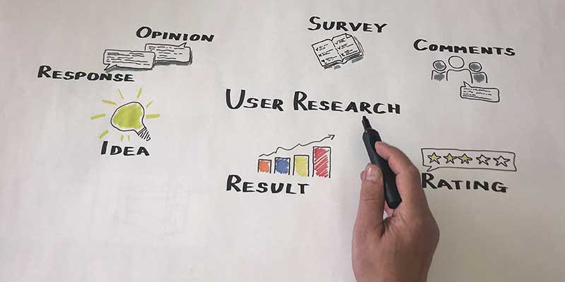
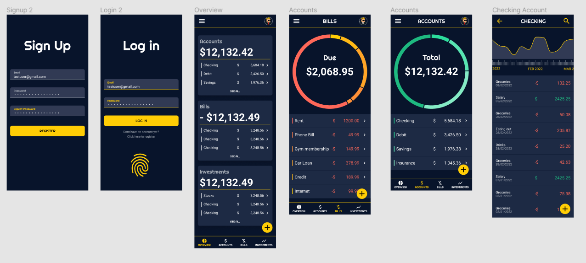
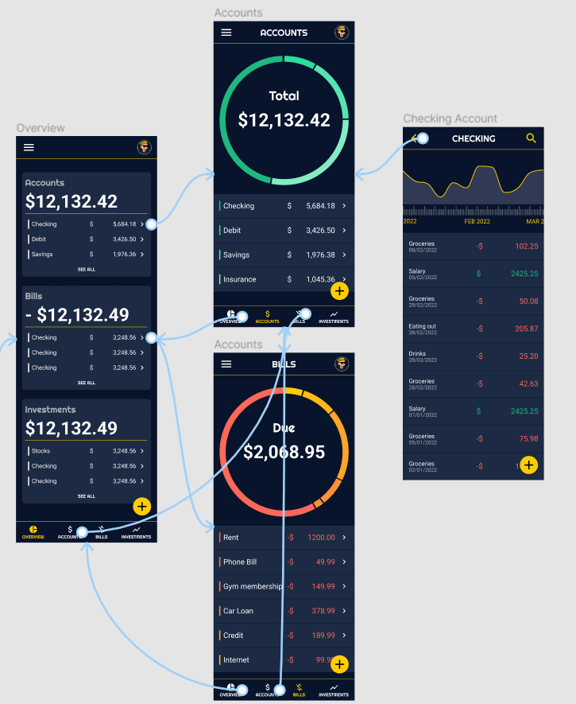

Stonks Capital Design
Role UI / UX Designer
Context Application Design
Period 2022 February - 2022 March
The Project
Stonks capital is a financial and budgeting tool tailored to satisfy the needs of the people who would like to keep track of their spending habits, moreover their long and short term investments. Stonk Capitals key offering includes multiple account tracking options, and showcasing of upcoming bills.
The Problem
There are many applications to keep track of different accounts, account balances, upcoming
bills, insurances, investments, etc.
An average user would have to download three or four
applications just to keep track of everything.
Stonks Capital is planning to solve the issue of having multiple different applications,
creating one that the user can input all their data thus making it easier to keep track of
investments and finances.
The Goal
Design an easy to use mobile app experience. Create a user-flow that allows the user to see their portfolios at glance and check their balances on their different accounts.
User research: summary

Interviews were conducted based on which empathy maps were created to understand users.
The app prioritises users between the age group of 25-40 after identification through research.
These people are the most likely to use an application that keeps track of their balances as
they are the most money conscious user group.
This group confirmed that these people are the ones that are most likely technically advanced
enough to use these kinds of apps and sync their data. Furthermore they want to be sure about
their balances quickly and at a glance.
Persona 1

Sarah is a conscious university student who wants to be able to see her spendings and bills easily because it is crucial for her to pay her apartment bill and student loan in time.
“Being a university student is hard and tiresome, I need something that helps me keeping track of my money”
Persona 2
Josh is a busy entrepreneur who needs an application where he can keep track of different accounts and spendings at once because as he owns multiple businesses using multiple applications for the same purpose can be tedious.
“I do not have much time for my expenses due to my busy work schedule, i would like to be able to view all my earnings and spendings easily”
Digital Wireframes
The goal was to make the user sign up and log in to the application easily. After that they
would get a quick overwiev of their portfolio, then they can choose where to advance forward.
The following image showcases the main parts of the application
Low-Fidelity Prototype
In the low-fidelity prototype I connected all of the screens involved into a primary user flow.
The user can navigate easily between their accounts, bills, and investments.
it was also important to have the user be able to check individual spendings, furthermore to
make the navigation as easy as possible.
High fidelity prototype
The hi-fi prototype followed the same user flow as the lo-fi prototype. The changes made after the usability study, as well as several changes suggested by members of the team. Link


Takeaways from the project
Creating only one iteration for instance only a mobile application can be a long and tiresome job. Finding out what we think the user needs and what they actually need might be totally different in the context.
What I learned
I learned to break down complicated designs into small, manageable chunks. This eases development and handles bugs as we go along.